解谜｜「应该」怎样求解数回 (Slitherlink)｜其一¶
零、为什么要写作这个？¶
先前的一些文章简要讨论过一些数学和计算机方法，能够把一类逻辑谜题建构成数学模型，并证实了它们能够借助成熟的求解工具快速求解。虽然这是个NP-Complete问题，但对于人类日常接触并且求解的那些谜题（很难超过50x50规模，千格大小），“找到解”、“验证唯一性”，这两个问题，事实上的难度已经很低了。
但或许，一个值得讨论的问题是在 “How to solve” 的基础上追问一句 “How should we solve” 上，也就是：
- 我们不仅希望知道终盘是什么样的，我们还想知道，如果一步一步地根据现有盘面，按照逻辑规则进行推理，会得到怎样的求解链路？ 谜题能够被求解完毕么？
- 如果尽可能少地借助暴力猜测、回溯，一个谜题该如何被求解掉？哪些规则对于求解是至关重要的？
- 类似标准数独有 Elimination / Naked-Pairs / XY-Wing / Forcing-Chain 之类的求解技巧，不同技巧对应某种难度梯度，数回谜题的难度应该如何衡量？通过查找“一步步求解它所需要的技巧”，我们才能从逻辑难度上给出这个谜题的难度衡量方式（某一步必须通过某种推理完成），因此去追溯“求解链路”是比较重要的。
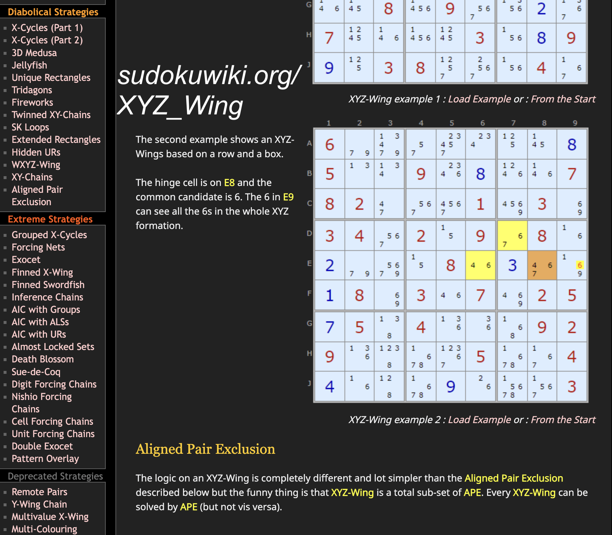
sudokuwiki.org/XYZ_Wing，关于数独求解技巧的解释，提供了详细的、可解释的使用方法。
一、什么是数回 (Slitherlink)¶
数回是一种逻辑谜题，玩家需要在网格上绘制一条连续不交叉的闭合回路，满足以下基本规则：
- 回路规则：回路不能交叉或自触，每个顶点只能有0或2条线段连接；
- 数字规则：每个标有数字的单元格，其四周边界中恰好有对应数量的线段属于回路
- 唯一性：合法的数回谜题有且仅有唯一解
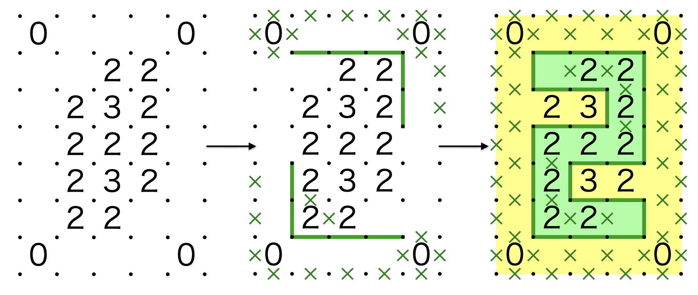
一个完整的数回求解逻辑，大致如上图所示，最开始的盘面，到求解的中间状态，最后是终盘。我们正好复习一下常用的标记：
- 线段（Line）：确定属于回路的边界，比如图绿线
- 叉号（Cross）：确定不属于回路的边界，比如图中的绿叉；
二、基础规则 (Basic Rules)¶
规则1：基础数字提示补全（Cell Clue Completion）
这是最基础的规则，直接由数字提示的定义推导而来：
- 若数字单元格周围已确定的线段数量等于数字值，那么其余所有未知边界都标记为叉号；
- 若数字单元格周围已确定的线段数量 + 未知边界的数量等于数字值，那么所有未知边界都标记为线段；
示例：
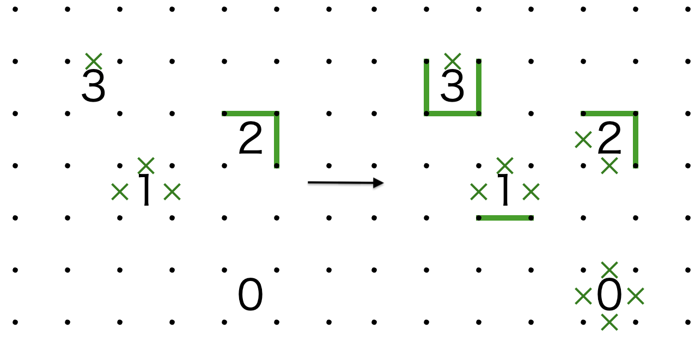
规则2：顶点度数规则（Vertex Degree Rule）
众所周知，在直角坐标系二维的网格中，每个顶点最多只能连接两条线段（因为回路不能交叉）：
- 如果一个顶点已经连接了两条线段，那么其余所有可能的连接都标记为叉号
- 如果一个顶点已经连接了一条线段，且只剩下一个未知连接，那么这个未知连接必须是线段
- 如果一个顶点没有连接任何线段，且只剩下一个未知连接，那么这个未知连接必须是叉号
示例：
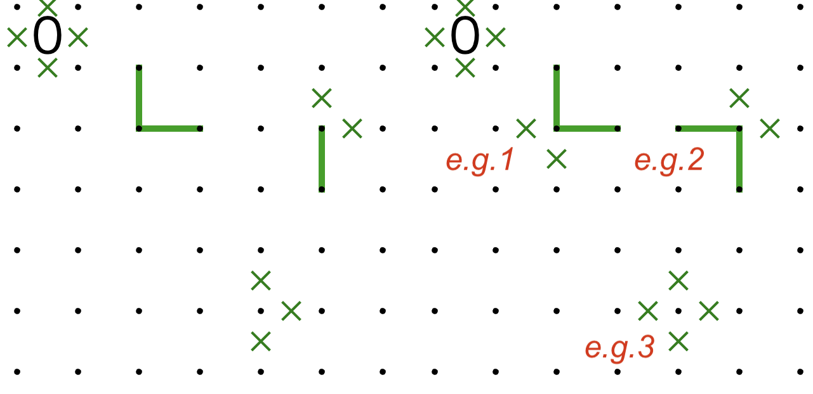
规则3：防止提前闭合（Prevent Premature Loop）
最终的回路只能有一个，因此在求解过程中不能形成小的闭合回路：
- 如果连接某条线段会行程某闭合回路，且该回路并不包含所有的已知连接，那么这条边界必须标记为叉号。
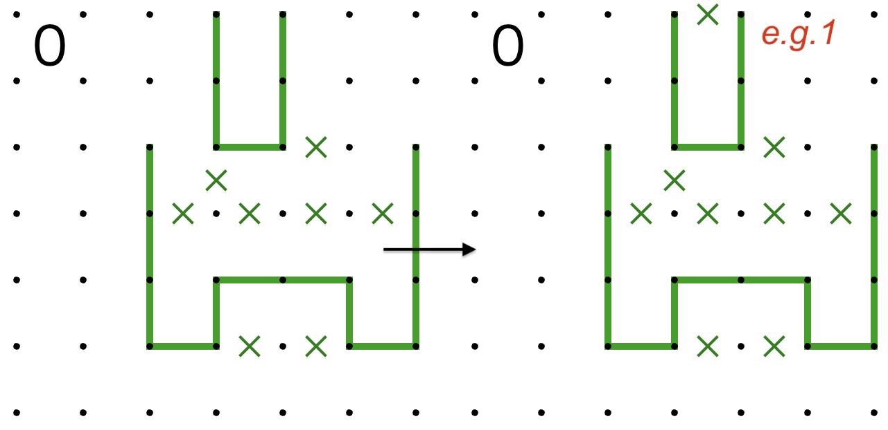
三、基础模式 (Pattern)¶
上述推理规则，可以轻易导出一系列新的范式，这些可以轻松帮助在一般难度的盘面里获取初盘的基础推断。我们后面会用另一种方式推理出，如何更加普遍地推导更广泛情况下的连接，不只限于这些基础模式。
模式1：连续的3（Contiguous 3-Run）
当有两个或多个数字3在同一行或同一列连续排列，且该部分并不是全图唯一的环路部分：
- 连续3的两端边界必须是线段
- 连续3之间的公共边界两侧的垂直线段（对于水平排列的3）或水平线段（对于垂直排列的3）必须是叉号
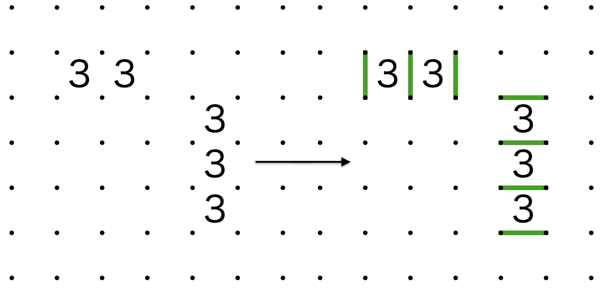
为什么？很Trivial，遍历一下组合就行了。3的格子共4种情况，做简单推理可得，其中第三种是不可行的，第四种几乎不可能在实际谜题中出现。
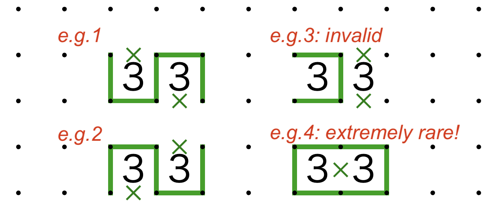
模式2：对角相邻的3（Diagonal Adjacent 3）
当两个数字3在对角位置相邻时： 它们的外拐角边界必须是线段。
实例：
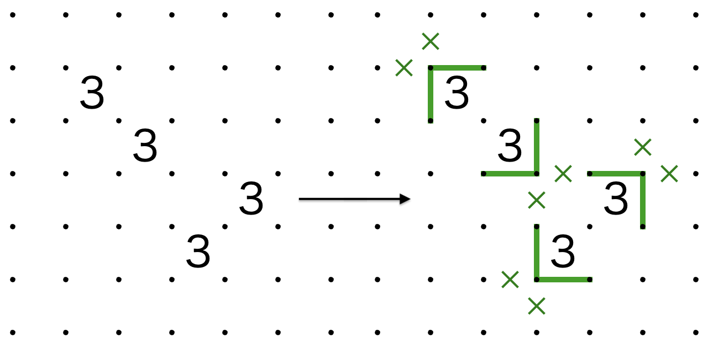
现有一些基于 Pattern 进行推理的求解工具，感兴趣的伙伴可以移步 Jonathan Olson 的网站，他提供了数万种不同的基础模式，用以解决不同网格下的数回谜题。
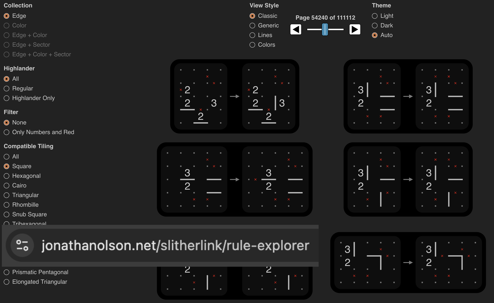
四、染色 (Coloring)¶
我们接下来会简单讨论一个新的理解数回的视角：染色 (Coloring)。
整个数回组成的回路是唯一的，是一个若尔当曲线。所以，整个回路一定会在整个盘面中圈出一个封闭区域。比如，下面最右图，最终的线段包围的范围，我们默认用绿色表示，对于其他没有被包围的格子，用黄色表示。
若尔当曲线定律 (Jordan Curve Theorem, 1887)：每个平面单闭曲线都将平面划分为两个区域：1) 由曲线界定的内部区域；2) 包含所有近距离和远离的外部点的无界外部区域 。连接一个区域点到另一个区域点的每一条连续路径都会在某处与曲线相交。
而且，更重要的是，在数回中，我们可以发现基础染色规则一：
- 如果一个边在终盘里是连接的，那么共享该边的两个格子，在终盘里染的颜色一定是不同的；
- 如果一个边在终盘里是叉掉的，那么共享该边的两个格子，在终盘里染的颜色一定是相同的；
现在我们需要回答一个问题：
染色是如何开始的？
答：从边缘格开始。
我们可以把所有处在网格边缘的格子单独拎出来看，也就是：第一/最后一行的所有格子、第一/最后一列的所有格子。这些格子都默认和一个被染成黄色的虚拟格子“相邻”，而具体的相邻关系，则与他们共享的边界边有关。
什么意思？
比如，第一行最后一列的格子（深蓝色框圈出），它有两条边位于边界上（右侧边、上侧边），它的染色情况其实就和这两条边界边的连通情况有关。
如果这两条边中的任意一条已经被确定为不连通的“叉”，就意味着，这个格子有一条和虚拟黄格共享的边是“叉”，根据上面的规则，这个格子一定是黄色的。
反之，如果这两个边任意一个被确定为“连通”的，也就意味着该格与虚拟黄格共享的边是“连通”态，那么这个格子一定是绿色的（与黄色格相反）。
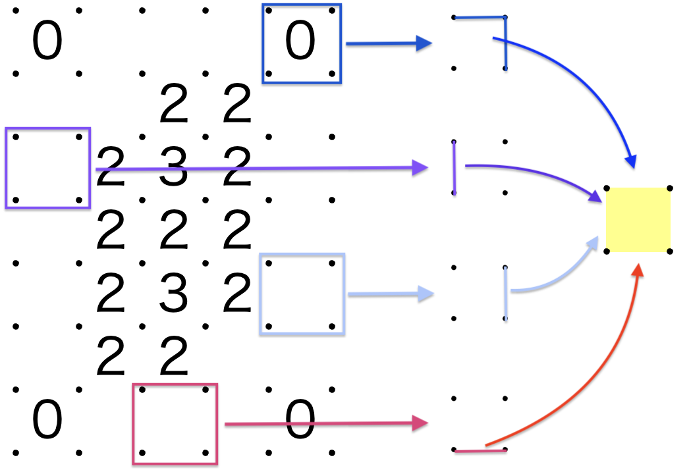
再举一例子，最后一行最中间的格子（红色标出），作为最后一行的格子，只有一个边处在边界上（下边），那么，它的下边和那个虚拟黄格相连。只要这个边能够被确定为连通或者不连通，这个格子的染色情况也就不言而喻了。
在这个状态下，我们可以根据上面的推论，得到另外一些“基础染色规则”：
- 如果两个相邻格子已知被染成了不同颜色，那么他们共享的边一定是连接着的；
- 如果两个相邻格子已知是同色的，那么他们共享的边一定是不连接的；
做一个简单的示意图。当你对盘面做了一定推理后，通过染色机制，可以比较明确地看到整个盘面的大致情况。
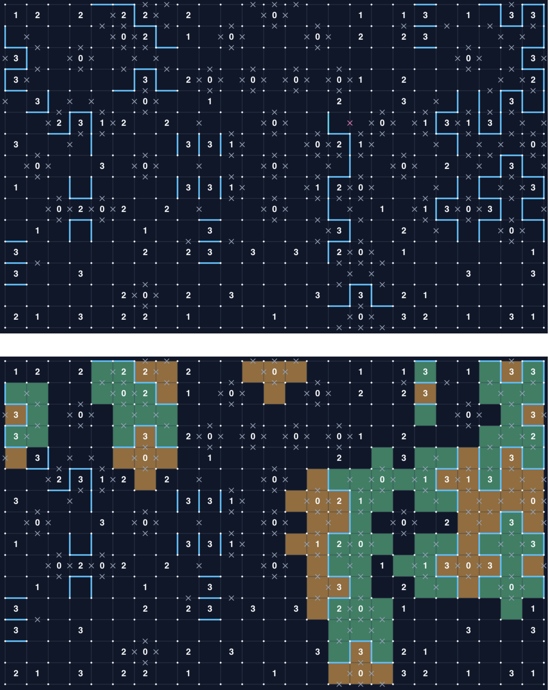
这个染色机制其实暗含了两个非常强的约束：
- 所有绿色格子必须是连通不被切分的；
- 所有黄色格子，必须都能连接到虚拟黄点。
上述1是显而易见的，2也很好理解，比如：
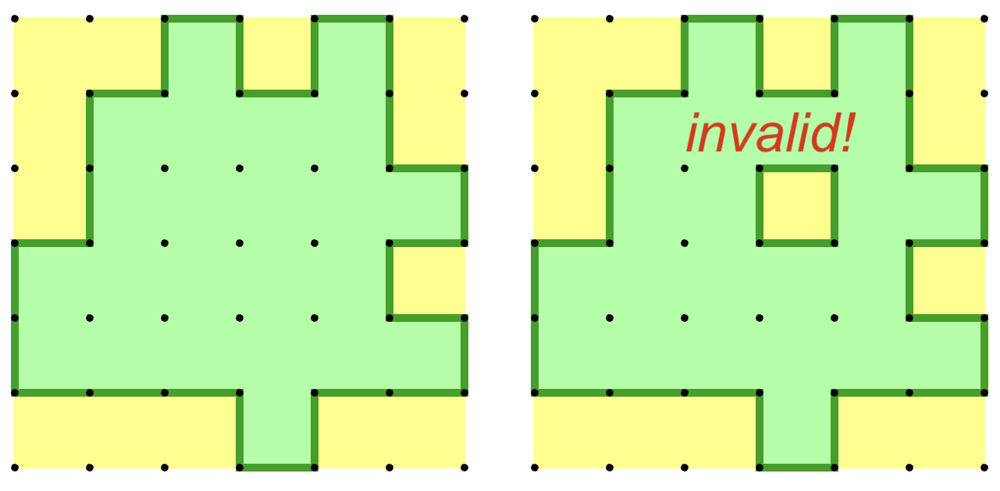
上述基础的染色机制只是提供了一种盘面划分的方式，更重要的是，如何把染色落到最终“连通路”这个操作上。一个简单的思路：染色传播。
接下来的判断就有些繁琐，但是其实理解上并不难。我们做标记：
green_cnt表示该格子相邻格中确定被染绿的格子数；yellow_cnt表示该格子相邻格中确定被染黄的格子数；clue表示该格子的数字，即4 - clue表示该格边中，叉的数量；yellow或green表示该格子的染色状态（可以是无）；
『备注』：对于所有边缘格子，我们可以默认，它的相邻格子有“虚拟黄格”。
我们可以做如下的基础推导：
| 条件 | 含义 |
|---|---|
clue < green_cnt |
不能是 yellow（线不够隔开所有 green 邻） |
4 - clue < yellow_cnt |
不能是 yellow（叉不够接住所有 yellow 邻） |
clue < yellow_cnt |
不能是 green（线不够隔开所有 yellow 邻） |
4 - clue < green_cnt |
不能是 green（叉不够接住所有 green 邻） |
green 且 clue == yellow_cnt |
线已全部被「已知 yellow」占满 → 未知邻为 green |
yellow 且 clue == green_cnt |
同上对称 → 未知邻为 yellow |
yellow 且 clue == 4 - yellow_cnt |
叉数 = 已知 yellow 邻数 → 未知邻为 green |
green 且 clue == 4 - green_cnt |
叉数 = 已知 green 邻数 → 未知邻为 yellow |
在整个盘面上，这种推导规则有时候可以做出一些意想不到的小推断，带来一定的可解释性，譬如：
- 中间未染色的 1，如果它是黄色格，那么它就必须要有3条边来隔开它与绿色格，而数字是1，说明这种假设不成立，此格必然是绿色格；
- 此格是绿色格，那么它有3条边必不相连，此时有且只有一个边可连（下边），这个连边会导致该格和下面的格子不同色；
- 由是，下面的无数字格得到了颜色确认，由颜色确认，可以反推出边的连接情况。
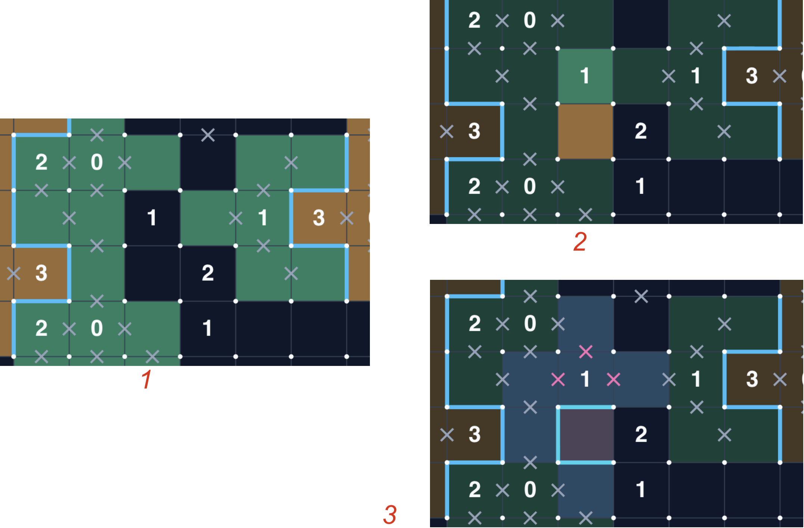
五、扇区 (Sector)¶
这部分很大程度上借鉴参考了Jonathan Olson的文章。
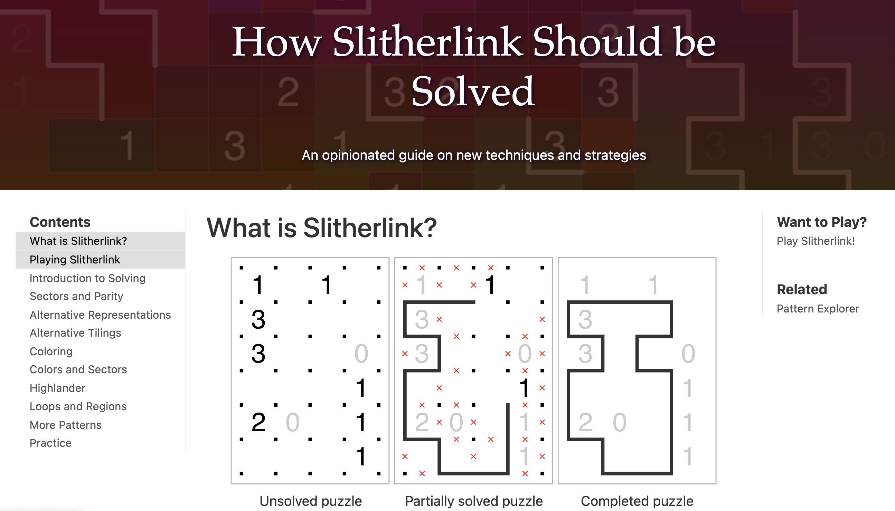
浏览器直接搜索即可找到这个blog。
扇区 (Sector) 是指一个单元格的某个顶点上的两条相邻边组成的扇形。也就是，一个Sector指示“两条共顶点的边”的状态。
我们参考 Jonathan Olson 的标记，他用一个红色小弧，表示 OnlyOne，用来标记“这两条边有且仅有一个在最终答案里。
当然了实际还有更多有助于推断的记号，比如：
- ONLY_1（恰好一条）：扇区中的两条边恰好有一条是线段，另一条是叉号
- NOT_1（不是一条）：扇区中的两条边要么都是线段，要么都是叉号，用双蓝弧表示；
- NOT_0（不是零条）：扇区中至少有一条线段，用双虚线绿弧表示；
- NOT_2（不是两条）：扇区中至多有一条线段，用虚线红弧表示
这个时候，我们可以定量地分析每一个格子的具体情况了，更重要的是，这种标记是可以传播的：
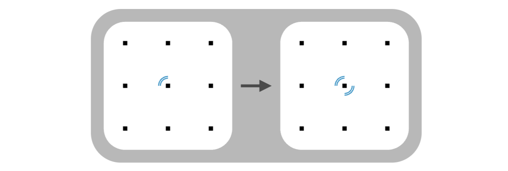
「解释」：在对角顶点下，NOT_1 可以直接传播，因为某两个边要么0要么2，此时，对角的那两个边要么2，要么0，也就是 NOT_1；
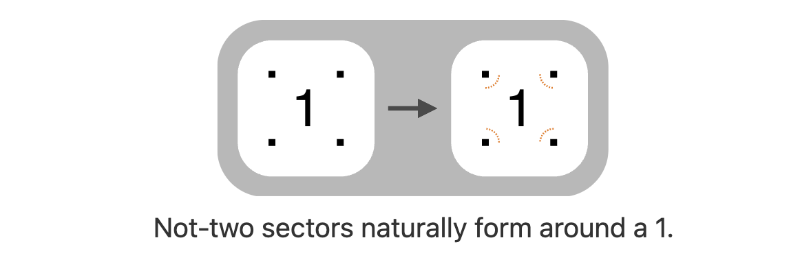
「解释」：任何一个为 1 的格子，每个sector一定都默认为 NOT_2，否则违背数字约束；
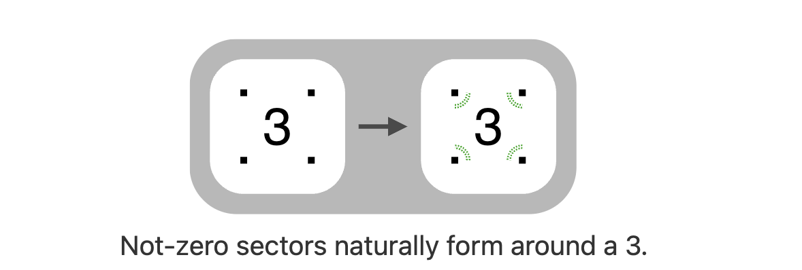
「解释」：任何一个为 3 的格子，每个sector一定都默认为 NOT_0，否则凑不出3边；
扇区的传播¶
扇区更重要的是提供一个易读且能够在不同区域进行约束传播的方式。参考下表。我们指定：
nonSectorEdgeCount表示，已经确定的、「共享扇区的角但是不属于这个扇区的边」有多少条，方格内部顶点一般是 2 条，边界/角上会更少。nonSecLineNum表示，上述非扇区的边里，已经确定标成 线（line）联通的条数。nonSecCrossNum表示，上述非扇区的边里，已经确定标成 叉（cross），不连通的条数。
可以轻易地给出如下的扇区推理（部分），从而便于推导：
| 条件+收窄结果 | 含义 |
|---|---|
nonSectorEdgeCount === 0->NOT_1 |
顶点其余部分无法提供出度 ⇒ 扇区不能恰 1 条线（只能是 0 或 2）。 |
nonSectorEdgeCount === 1 且共顶点的另一个扇区唯一的边为叉->NOT_1 |
顶点相对角的扇区无法给到出度 -> 该扇区不能为 1 |
nonSecCrossNum === 2->NOT_1 |
非扇区两叉等结构 ⇒ 扇区不能是「恰 1 线」（只能是 0 或 2）。 |
clue 2 且对角 1 线 1 叉->ONLY_1 |
典型 2 的角模式。 |
clue 1 且对角 两叉->ONLY_1 |
典型 1 的角模式。 |
clue 1->NOT_2 |
扇区不能 2 线（至多 1 条）。 |
clue 3 且「对角扇区」都是线->ONLY_1 |
典型 3 的角模式 ⇒ 该角扇区恰 1 线。 |
clue 3 或扇区里已有 1 条线->NOT_0 |
扇区不能 0 线（至少 1 条）。 |
扇区内已有 1 条叉 ->NOT_2 |
不能再两条都是线。 |
展示一部分推理结果：
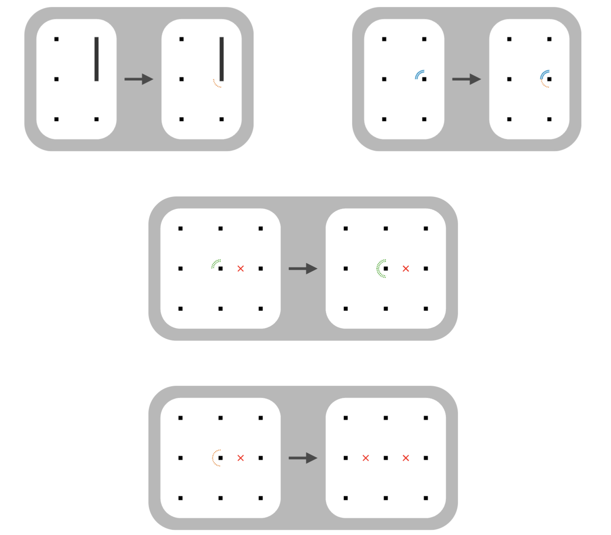
扇区的组合推导¶
通过给不同的sector进行标记，标记进行传播，我们会发现，某些sector可能被不同来源推导出多个sector属性，而这就有助于我们收紧约束：
| 状态 | 结论 |
|---|---|
| Not_0 + Not_1 | => 两边均连接 |
| Not_2 + Not_1 | => 两边均不连接 |
| Not_0 + Not_2 | => 收紧为 ONLY_1 状态 |
如果真正实现了扇区的推理，会发现它能够做到一些局部的优化改进，并且避免一些零碎的边角推理，但是它的效果依然是
奇偶性 (Parity)¶
可以看到，为了尽可能收紧我们的扇区推导，我们希望的是尽可能多地提供不同格子扇区的推导结果，这样才有助于删除备选不可行边之类的操作。这可以通过对某个特定格子已有的扇区以及奇偶性组合推理。
比如：以下规则组合使用时推理能力极强，核心为奇偶性（即奇偶数规律）。这是基于一重要推断：任意封闭区域（方格或任意闭合区域），最终回路穿过该区域的次数必为偶数；
ONLY_1 扇区代表回路穿越，NOT_1 扇区代表非穿越。
| 方格现有扇区分布 | 推导结论 | 通俗解释 |
|---|---|---|
3 个 ONLY_1 扇区 |
剩余 1 个扇区为 ONLY_1 |
三个角已定必1线，最后一角也必是必1线 |
3 个 NOT_1 扇区 |
剩余 1 个扇区为 NOT_1 |
三个角已定禁1线，最后一角也必是禁1线 |
2 个 NOT_1 + 1 个 ONLY_1 扇区 |
剩余 1 个扇区为 ONLY_1，最终两类各 2 个 |
已有两禁一必，补齐后刚好各占两个，符合奇偶守恒 |
上述是比较单薄的解释，更灵活的做法是根据每个格子具体的连接情况进行判断，譬如图中最后一种情况，一个边已连通，一个扇区是“NOT_1”，另一个sector则是 “NOT_2”，依然是简单假设一下即可找到共同性，不展开了。
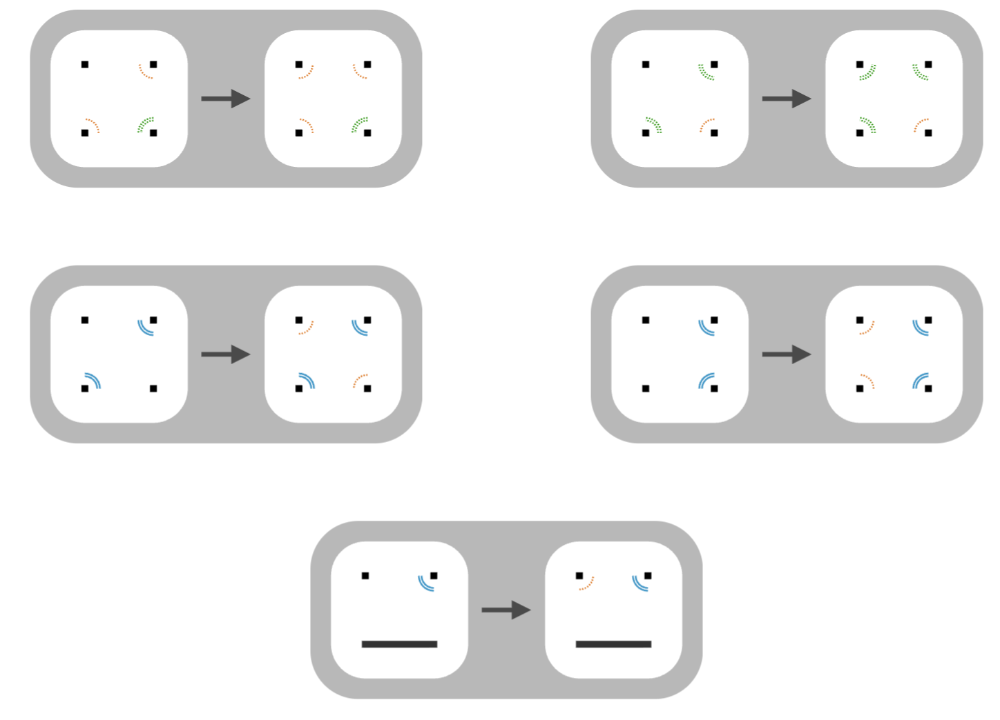
后续¶
第一篇文章非常潦草地概括了一下，用于解决求解数回的一些“可解释”的策略和技巧，当然如果做多了数回会意识到，人在解答的过程中是非常灵活的，很多规则单纯地用符号标记等很难表述清楚，计算机hard code的不过是比较僵硬的局部规则，真正能够可解释地自动求解数回，很依赖一些灵活的假设推导、全局的连通性检验。这就是后面的内容了 ...
不过这部分内容就当作一次简单的尝试，介绍一些可解释的求解规则与谜题的求解方法。后面应该还会补充更多的一些求解技巧，包括可解释的推断、全局连通检测、多技巧结合的内容。
最后打个广告，最近感觉大家都在 Vibe Coding，于是我也 Vibe Code 了一个简易的分步骤、可解释的数回求解网页工具，支持puzzlink和penpa导入盘面，对于中等规模的谜题大多可以在秒级别给出求解链路。纯网页端使用，可参考：Puzzlekit Web